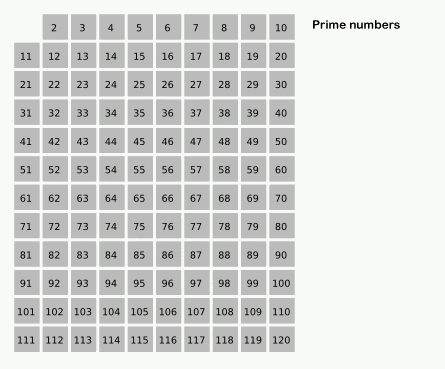

A fast way to generate primes in Haskell
Posted on May 13, 2015
On the front page of Haskell.org, you will see this implementation of the sieve of Eratosthenes:
primes = sieve [2..]
where sieve (p:xs) =
p : sieve [x | x <- xs, x `mod` p /= 0]When you see this for the first time it’s amazing. But it’s not the sieve of Eratosthenes.
The problem with the algorithm is the way it crosses-off numbers. In the true sieve of Eratosthenes when we find a prime number, p, we start at p2 and from there we cross-off multiples of p. For example, when calculating prime numbers less then 100, when we find 7 we start at 49 and cross-off 56, 63, 70, 77, 84, 91, and 98. That’s 8 operations. When the false algorithm finds 7, it checks every number from 8 to 100, that’s 92 operations!

Melissa E. O’Neill gives us a real functional, lazy, implementation of the algorithm in her paper, The Genuine Sieve of Eratosthenes.
For every number, we check if it’s a multiple of a prime seen so far. We don’t have to check all the primes. We store the primes in a priority queue, indexed on the smallest multiple of it we have seen. We only compare the current number to the smallest index of the queue. If it equals our current number, we know our number must be a composite. We then increment the prime multiple to the next multiple of the prime, and insert it back into the queue. (We also have to adjust the queue because some numbers are inserted more than once. 12 will be in the queue twice because 22 + 2 + 2 + 2 + 2 = 12 and 32 + 3 = 12. Notice 12 is also crossed-off twice in the animation.)
We store multiples of primes as infinite lists. Laziness is key.
My interpretation of the algorithm uses Data.Set as a priority queue, because the functions insert and findMin are O(log(n)).
import qualified Data.Set as PQ
primes :: [Integer]
primes = 2:sieve [3,5..]
where
sieve (x:xs) = x : sieve' xs (insertprime x xs PQ.empty)
sieve' (x:xs) table
| nextComposite == x = sieve' xs (adjust x table)
| otherwise = x : sieve' xs (insertprime x xs table)
where
(nextComposite,_) = PQ.findMin table
adjust x table
| n == x = adjust x (PQ.insert (n', ns) newPQ)
| otherwise = table
where
Just ((n, n':ns), newPQ) = PQ.minView table
insertprime p xs = PQ.insert (p*p, map (*p) xs)The difference in time it takes each algorithm to calculate the 10,000th prime number on my machine is huge:
False sieve:
real 0m7.913s
user 0m7.886s
sys 0m0.016sO’Neill’s algorithm:
real 0m0.248s
user 0m0.241s
sys 0m0.004sThe false sieve takes almost 8 seconds! Compare this to the real sieve which takes about 0.24 seconds.